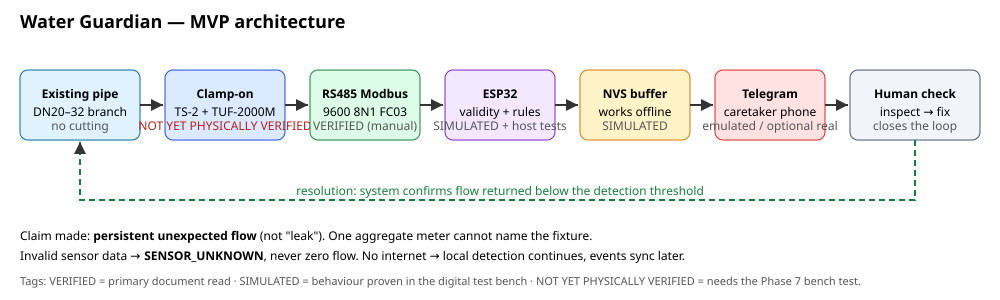
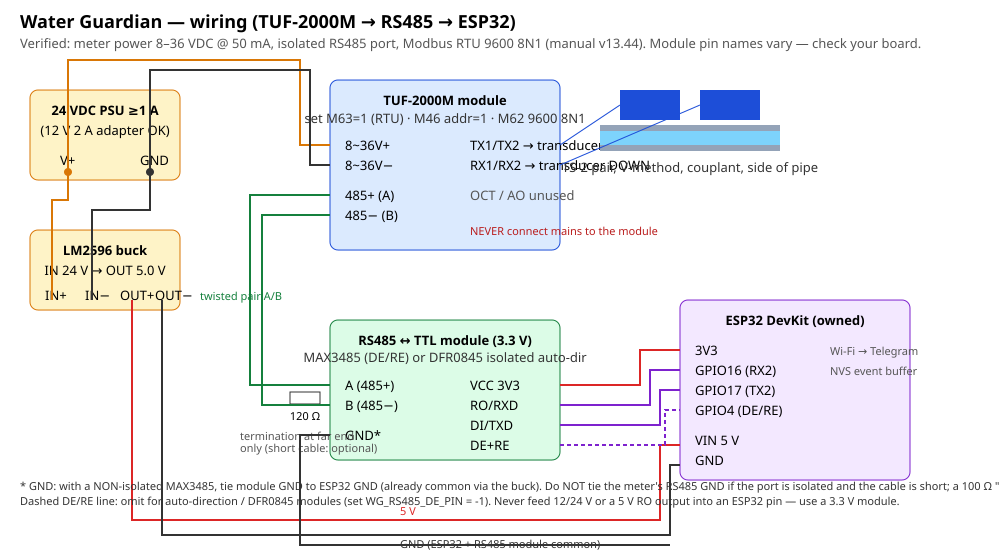
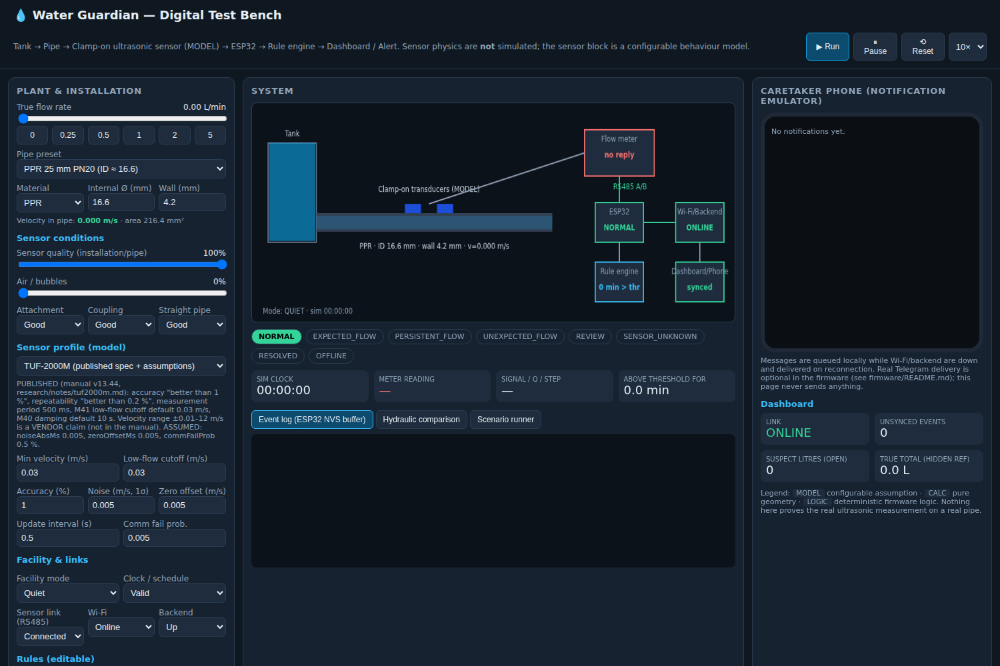
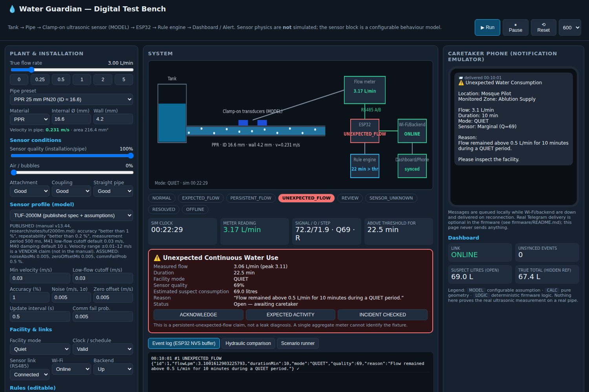
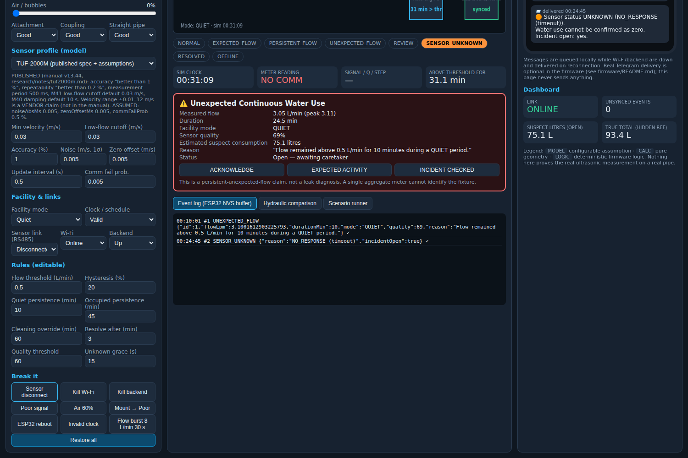
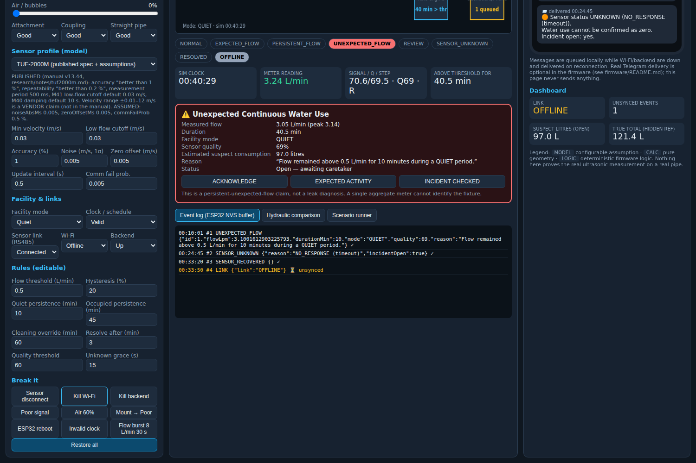
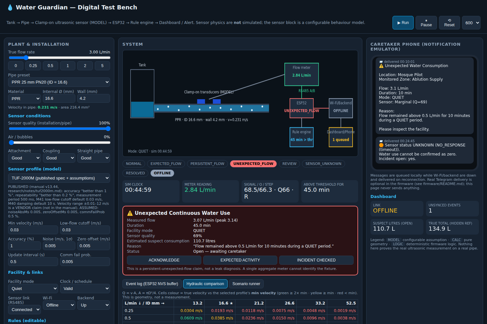
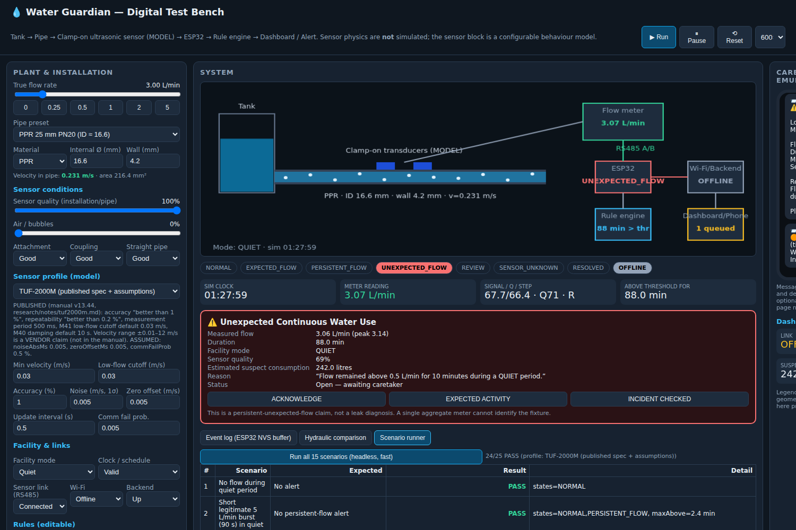
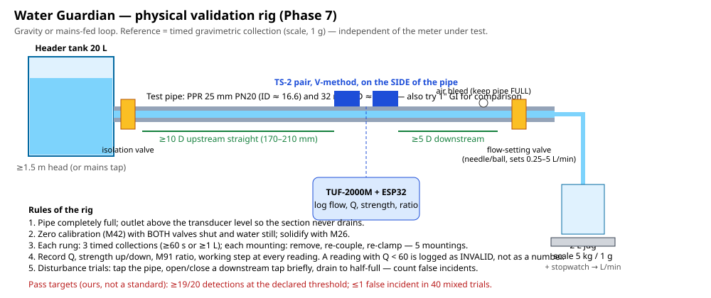

Version 1.0 · 2026-09-12 · Workspace water-guardian-simulation/
Tags used throughout: VERIFIED (primary document read, or listing seen) · CALCULATED (pure arithmetic/geometry) · SIMULATED (proven in the digital test bench or host tests) · ASSUMED (our engineering assumption) · NOT YET PHYSICALLY VERIFIED (only a bench test with a real meter can settle it). Research-access caveat: manufacturer, marketplace and government pages were mostly blocked from the research sandbox; facts from those pages are quoted via search snippets and flagged (snippet). The TUF-2000M manual itself was read in full from a GitHub mirror.
Can this system actually work? The electronics, protocol, firmware and detection logic: yes, with evidence. The one thing that decides the project — whether a ~SAR 600 clamp-on transit-time meter reads a small PPR pipe at 0.5–1 L/min with a stable zero — is not yet verified, and the available field evidence is unfavourable.
Decision: GO WITH CONDITIONS (§24) — and for the purchase itself: NO — BORROW FIRST; if a loan is impossible within two weeks, YES — BUT ONLY AFTER the pipe facts in §23 are in hand and the order is placed as the AliExpress SAR ≈ 450–600 kit, budgeted as a test article whose failure is an acceptable outcome (§25).
Retrofit monitoring of an existing facility pipe (mosque ablution supply first) to detect persistent unexpected water flow — not "leak" — without cutting or drilling, on the smallest, cheapest, fastest credible prototype, using the ESP32 already owned. Reduce technical uncertainty before spending ~SAR 600+ on a clamp-on ultrasonic meter.

Qualified existing pipe (DN20–32 branch, full, ≥10D/5D straight)
↓ acoustic, no cutting
TS-2 clamp-on transducers, V-method, couplant, side of pipe
↓ coax
TUF-2000M module (8–36 VDC · M63=RTU · M46=1 · 9600 8N1)
↓ RS485 A/B (isolated port)
RS485↔TTL 3.3 V (MAX3485 with DE/RE, or DFR0845 isolated auto-direction)
↓ UART2 GPIO16/17
ESP32 (owned): Modbus poll 1 s → validity policy (step, Q, strength, ratio, error bits)
↓ valid samples only ↓ invalid → SENSOR_UNKNOWN (never zero)
30 s moving average → rule engine (QUIET / OCCUPIED / CLEANING, threshold + persistence)
↓
NVS: incident + unsynced events (survive reboot, work offline)
↓ Wi-Fi when available
Telegram bot → caretaker phone (+ optional HTTP backend/dashboard)
↓
Human inspection → flow stops → system confirms flow < threshold for resolveMin → INCIDENT RESOLVED
Changes vs. the initial proposal, and why: (1) an explicit validity layer before the rule engine, because the meter reports 0 when it has no signal and, by default, holds the last good value on poor signal (M28) — both would be silently misread as facts; (2) a 30 s moving average and gap tolerance, because the first simulation run showed noise spikes being counted as "persistence"; (3) placement on a branch, not the riser, from the hydraulic table. Diagrams: diagrams/architecture.svg, diagrams/wiring.svg, diagrams/architecture.md (Mermaid state machine).
(All snippet-level; official pages must be opened to confirm — see research/notes/competition.md.)
| Item | MEWA University Innovation Challenge (تحدي الابتكار الجامعي) | Future Makers: AI Challenge for Critical Sustainability | SWA Global Prize for Innovation in Water |
|---|---|---|---|
| Organizer | MEWA Agency for Research & Innovation — VERIFIED (snippet) | DCO + MEWA + RDIA + KACST via NexaBridge — REPORTED (press) | Saudi Water Authority — VERIFIED (snippet) |
| Fit | Best match: water element explicitly "water loss and grey water management" | Only if a genuine AI component exists (AI is mandatory) | Conservation / digital water management categories; global, professional |
| Team | "1 faculty member and 4–5 students" — VERIFIED (snippet) | innovators/startups/researchers in DCO states; no team rule | universities eligible; no team rule |
| Edition / deadline | 2nd edition reported (Sabq); page updated 2025-07-20; 2026 cycle status and deadline NOT FOUND | closes 4 Oct 2026 (press) | 8 Jun–30 Sep 2026; TRL 1–3 / 4–7 tracks |
| AI required | NOT FOUND → treat as not required | Yes | No |
| Prototype required | NOT YET VERIFIED ("early-stage ideas" → "pilot projects") | implied (demonstration/testing in KSA) | by track |
| Evaluation criteria | NOT FOUND | NOT FOUND | NOT FOUND |
| Restrictions relevant to us | none found; utility-vs-end-user scope of "water loss" unverified | pure threshold logic likely insufficient | none found |
Three programmes share the words "تحدي الابتكار" (MEWA UIC, MEWA "للاستدامة" with Babson, MoE "للتنمية المستدامة"); rules must not be mixed. Action: open the MEWA UIC page (EN/AR) and the SEU notice from an unblocked browser and record platform URL, dates and criteria before the next milestone.
Clamp-on transit-time meters are a mature industrial product (Flexim, Siemens, KROHNE, E+H) priced SAR 20k–60k, and a Chinese OEM family (TUF-2000 / TDS-100, Dalian Taijia and clones) priced SAR 400–2,000 that shares one firmware lineage, menu map and Modbus table. Small-pipe (≤ DN32) clamp-on is the hard corner of the market: industrial vendors quote ≥ 0.3 m/s for full accuracy; Keyence sells purpose-built dry-clamp sensors for ø13–44 mm at SAR 2–4k; hobbyist reports of the cheap family on 22–28 mm pipe describe zero-flow oscillation and drift. There is no evidence anyone sells a sub-SAR-1,000 clamp-on meter specified for PPR. Detailed candidates: SENSOR_COMPARISON.md, research/notes/alternatives_and_procurement.md.
The 33-item questionnaire for the TUF-2000M family, answered from the manual (v13.44) and cross-checked code, is in research/notes/tuf2000m.md. Headlines:
| Item | Finding | Tag |
|---|---|---|
| Transducer for DN20–32 | TS-2 "small" — DN15–100 (most listings) vs DN25–100 (older listings); manual lists TS-1/TM-1/TL-1 codes, not TS-2 | CONFLICT (snippet) |
| Materials (M14) | carbon steel, stainless, cast/ductile iron, copper, PVC, aluminium, asbestos, fiberglass, other (enter sound speed). PPR, CPVC, galvanized not listed (galvanized → carbon steel; PPR → "other" + sound speed, value not in any TUF document) | VERIFIED (manual) |
| Accuracy / repeatability | "better than 1 %" / "better than 0.2 %"; linearity 0.5 % (datasheets) | VERIFIED / snippet |
| Velocity range | ±0.01–12 m/s (vendor); M41 low-flow cutoff default 0.03 m/s (manual); "0.001 m/s with PI transducers" (manual, not clamp-on) | CONFLICT |
| Straight pipe | upstream 10D (up to 20–30D after fittings/pump), downstream 5D; pipe must be full | VERIFIED |
| Temperature | TS-2 −30…90 °C (HT −30…160 °C) | snippet |
| Power | 8–36 VDC @ 50 mA (or 10–30 VAC); mains must never be applied to the module | VERIFIED |
| Interfaces | isolated RS485 (Modbus RTU/ASCII, FC03/06), 4–20 mA loop, 2× OCT (pulse/frequency/relay-like), PT100 inputs | VERIFIED |
| Pulse | OCT totalizer pulse, unit × multiplier, ≤ 1 pulse per 500 ms period, 6–1000 ms width | VERIFIED |
| Diagnostics | reg 92 = step (hi byte) + Q 0–99 (lo byte); reg 93/94 strength 0–2047; reg 97–98 transit ratio (normal 100 ± 3 %); reg 72 error bits (bit0 no signal … bit3 empty pipe); step letters R/I/H/J/G/K/E/Q/F | VERIFIED |
| Update rate | measurement period 500 ms; M40 damping default 10 s; first 60 s after power-on is settling | VERIFIED |
| Low-flow cutoff / hold | M41 (velocity, default 0.03 m/s); M28 "hold last good value" default YES; M.5 Q-threshold zeroes flow on airy pipes | VERIFIED |
| Zero | M42 with still water; lost at power-cycle unless M26 saves it | VERIFIED |
| Couplant / mounting | "adequate coupler… no gap", sand the pipe, transducers on the side to avoid bubbles, V-method 15–200 mm, W 15–50 mm | VERIFIED |
| Air sensitivity | empty-pipe code K, "poor signal" H; bubbles degrade Q | VERIFIED (qualitative) |
| Price / availability (KSA) | AliExpress TS-2 kit $100.70–208.50; landed SAR ≈ 430–1,090 incl. 15 % VAT; amazon.sa has only handheld TUF-2000H (SAR 502.50); noon: none | snippet / ESTIMATE |
| Returns | amazon.sa 15 days; AliExpress buyer protection (non-delivery); return-to-China impractical | snippet |
| Small-pipe field reports | 28 mm copper: "huge oscillations around zero when there is no flow", drift, "not suitable for relatively small copper pipes"; 22 mm: hard to get good Q; libe.net: needs Q > 85, read 1.3× low until M45 corrected; 1" PVC: worked. No PPR report found. | snippet (SECONDARY) |
Scored table in SENSOR_COMPARISON.md. Picks: Best overall / best budget: TUF-2000M + TS-2. Best if borrowed: Flexim FLUXUS F401 or Siemens FS230 portable (distributor demo), or the KFUPM GUNT HM 500 bench as a calibration reference. Best documented: Keyence FD-Q (2× budget, no Modbus RTU). Avoid: inline sensors as the primary (YF-S201), tubing-only clamp-ons (Sonotec CO.55), > SAR 25k instruments.
(VERIFIED from the manual and physics of transit-time meters; magnitudes on our pipe are NOT YET PHYSICALLY VERIFIED.)
| Material | Meter list (M14) | Our confidence | Note |
|---|---|---|---|
| PVC / uPVC | listed | medium-high | 1" Sch40 PVC field report worked |
| CPVC | not listed (use PVC or "other") | medium | thin CTS wall helps |
| Copper | listed | medium | but this is where the small-pipe noise reports come from |
| Steel | listed | medium-high | best acoustic match |
| Galvanized steel | not listed (use carbon steel) | medium | zinc layer/scale, thick wall; older mosque risers |
| PPR | not listed — M14 = "other" + sound speed in M15 (value NOT FOUND in TUF docs) | low until tested | the pilot's most likely pipe |
| Unknown | — | low | measure and identify first |
Required before purchase (§23): pipe material, OD, wall/PN class, ID, location of a full, straight, accessible run, and whether it is the riser or the ablution branch.
CALCULATED (Q = v·A, A = πD²/4; tests/results/HYDRAULICS_TABLE.md, tests/hydraulics_table.js):
| Flow (L/min) | ID 13.2 (PPR 20) | ID 16.6 (PPR 25) | ID 21.2 (PPR 32) | ID 26.6 (GI 1") | ID 52.5 (GI 2") |
|---|---|---|---|---|---|
| 0.25 | 0.030 m/s | 0.019 | 0.012 | 0.007 | 0.002 |
| 0.5 | 0.061 | 0.039 | 0.024 | 0.015 | 0.004 |
| 1 | 0.122 | 0.077 | 0.047 | 0.030 | 0.008 |
| 2 | 0.244 | 0.154 | 0.094 | 0.060 | 0.015 |
| 5 | 0.609 | 0.385 | 0.236 | 0.150 | 0.038 |
Minimum flow at the default 0.03 m/s cutoff: PPR 20 → 0.25 L/min · PPR 25 → 0.39 · PPR 32 → 0.64 · GI 1" → 1.0 · GI 2" → 3.9 L/min. Same volumetric flow, 10× lower velocity on the riser — the riser cannot see a dripping tap; a DN20–25 branch can, if the meter is quiet at zero.

(VERIFIED interface facts; module choice ASSUMED best practice.)
research/notes/alternatives_and_procurement.md Task C): plain 5 V MAX485 boards drive a 5 V RO output into the ESP32 RX — out of spec, avoid; MAX3485 is native 3.3 V (DE/RE tied to one GPIO, ≈ SAR 25–45, on amazon.sa); isolated auto-direction DFR0845 (ADM2483-class, 3 kV, ≈ SAR 150–200 landed) is the recommended primary for a mains-fed installation. 120 Ω termination at the far end only; short runs may omit it.diagrams/wiring.svg (power, grounds, A/B, RX/TX, DE/RE, isolation note).Firmware prototype in firmware/esp32_prototype/ (PlatformIO, Arduino core), status compiles; logic host-tested; not yet run on a real meter:
tuf2000m.*: register map from the manual (1-based → PDU −1), REAL4 low-word-first decode with a runtime toggle and a self-check on register 221 (inner diameter), validity policy (step = R, error bits 0–3 clear, Q ≥ 60, strength ≥ ~60 %, ratio 97–103 %, finite flow).rule_engine.*: C++ port of the simulator engine — same parameters, moving average, gap tolerance, NVS-persistable incident + 32-event unsynced buffer.main.cpp: 1 s polling, NTP-based schedule with a conservative policy when the clock is invalid, serial-console mode override for the demo, non-blocking Wi-Fi reconnection, Telegram + optional HTTP sync with ordered retry, periodic NVS checkpoint.test/test_native: 37/37 pass (CRC vector, word order, Modbus OK/timeout/CRC/exception, "no-signal zero is not valid", quiet persistence, unknown-keeps-incident, burst, occupied REVIEW, cleaning expiry, invalid clock, persist/restore without duplicate alert, gap tolerance).tools/virtual_tuf2000m.py: a Modbus RTU slave answering with the meter's register layout and fault injection (no signal, poor Q, dropped/corrupted frames, word order) for end-to-end tests over a socat pty pair or a USB-RS485 adapter.VERIFIED from the manual (p.39–47) and three code bases:
| Item | Value |
|---|---|
| Function codes | 0x03 read holding, 0x06 write single — only these |
| Serial | 9600 8N1 default (M62); address via keypad only (M46), default 1 |
| Protocol default | MODBUS-ASCII — set M63 = 1 for RTU |
| Addressing | manual register N → PDU address N−1 |
| Flow rate | reg 1–2, REAL4, m³/h (unit reg 1437) |
| Velocity | reg 5–6, REAL4 m/s |
| Totalizers | reg 9–10 LONG + 11–12 REAL4 fraction (× unit reg 1438 × 10^(reg 1439−3)); simplest: reg 113–118 REAL4 in m³ |
| Temperature | reg 33–34 / 35–36 REAL4 °C (PT100 fitted only) |
| Signal quality | reg 92 low byte 0–99; working step letter in high byte |
| Strength | reg 93 / 94, 0–2047 (display scale 0–99.9; mapping not published) |
| Transit ratio | reg 97–98 REAL4 %, normal 100 ± 3 |
| Error bits | reg 72 (bit0 no signal, bit1 low, bit2 poor, bit3 empty pipe, bit4 hardware … bit15 AI over-range) |
| Inner diameter | reg 221–222 REAL4 mm (used as word-order self-check) |
| Word order | low word first (CDAB) per AiltonFidelix, jkkorpi70, arivin29 (worked example 36.625 °C = 0x4212 8000 → regs [0x8000, 0x4212]); one blog says "big-endian" → CONFLICT, handled by toggle + self-check |
| Variants | M/B/H/F/S/P share the table; register set may differ on clones (C3 note) → validate on the actual unit |
Tool survey (research/notes/simulation_tools.md): Wokwi can run the ESP32 firmware and a C custom chip can act as a Modbus slave; pymodbus/socat give a virtual meter on a serial port; PlatformIO native / ESP-IDF host target unit-test the logic; QEMU has UART but no Wi-Fi; Tinkercad/Proteus/SimulIDE cannot run ESP32 + Modbus; no general-purpose tool simulates transit-time acoustics through a pipe wall (COMSOL/k-Wave are research-grade and out of scope). We therefore split the system:
| Layer | Simulated by | Fidelity |
|---|---|---|
| A Hydraulic / flow | engine/hydraulics.js |
CALCULATED (geometry only; no transients) |
| B Sensor | engine/sensorModel.js — configurable behaviour model (cutoff, noise, error, zero drift, Q/strength, step letters, comm faults); profiles IDEAL / CONSERVATIVE / TUF-2000M published / TUF-2000M field-reports / CUSTOM |
MODEL — no physics; every number is an assumption except the published ones |
| C Modbus / comms | tools/virtual_tuf2000m.py + firmware modbus_rtu host tests |
SIMULATED (protocol, framing, faults; not wire electrical) |
| D ESP32 firmware | logic host-tested; sketch compiles | SIMULATED (host) — not run on silicon yet |
| E Detection logic | engine/ruleEngine.js ≡ rule_engine.cpp |
SIMULATED, deterministic |
| F Dashboard / notification | simulator phone emulator; firmware Telegram optional | EMULATED |
Interactive bench: simulator/index.html (open directly). Water moves at the true velocity; every control from the brief is present; rules are editable; the "Break it" panel injects the 15 failure modes.
docs/screenshots/01_idle.png (bench idle) · 02_incident.png (3 L/min quiet → UNEXPECTED_FLOW, incident card, phone alert) · 03_sensor_unknown.png (RS485 disconnected during the incident → SENSOR_UNKNOWN, incident preserved) · 04_offline.png (Wi-Fi lost → OFFLINE overlay, events queued) · 05_hydraulics.png (velocity table coloured against the profile's minimum) · 06_scenarios.png (campaign run in-browser).






tests/run.js → tests/results/CAMPAIGN_RESULTS.md (deterministic seed, 1 s step). SIMULATED.
| Run | Profile | Result | Reading |
|---|---|---|---|
| TUF2000M_PUBLISHED | published spec + assumed noise | 24/25 | only rung 3 (0.25 L/min on ID 16.6 = 0.019 m/s) fails — below the 0.03 m/s cutoff by geometry |
| CONSERVATIVE | 0.05 m/s cutoff, 3 % | 24/25 | same |
| IDEAL | no cutoff | 24/25 | "fails" 13 only because an ideal sensor does see 0.5 L/min on DN50 — a finding, not a defect |
| FIELD_REPORTS_RAW (stress) | +0.03 m/s zero offset, 0.05 m/s noise, no zero-cal | 18/25 | meter reads 0.33 L/min at true zero; false incidents at 0.15/0.30 L/min thresholds; incidents at 0.5 L/min never resolve (§17) |
| FIELD_REPORTS_ZEROCAL (stress) | same noise, zero-cal applied | 23/25 | no false incidents; resolves normally; transient PERSISTENT_FLOW blips at zero; single samples can read 0 while flowing (averaging covers it) |
| FIELD_REPORTS_THR1 (stress) | no zero-cal, threshold 1.0 L/min | 20/25 | incidents resolve; no false incident at 1.0 (the two "failures" are ladder rungs that force their own low thresholds) |
Logic failures across all runs: 0. Firmware host tests: 37/37.
Scenario coverage vs the brief (1–15 all present, plus 9b cleaning expiry, 16 invalid clock, 17 burst, 18 air, 19 mount degrades, 20 Modbus CRC errors, 21 zero-drift stress, and zero-flow controls 3z/4z/5z paired with the ladder rungs).
| # | Failure | Behaviour proven (SIMULATED) |
|---|---|---|
| 1 | Sensor disconnected | NO_RESPONSE → SENSOR_UNKNOWN after 15 s grace; open incident frozen, not resolved; recovers with incident intact |
| 2 | RS485 CRC/timeouts (5 %) | absorbed by grace + averaging; detection unaffected |
| 3 | Wi-Fi lost | detection at 600 s while offline; events queued; synced on reconnect (0 unsynced at end) |
| 4 | Backend down | same as Wi-Fi (link overlay OFFLINE) |
| 5 | Poor signal (Q < 60) | SENSOR_UNKNOWN, no numeric claim |
| 6 | Air 80 % | step K/H → SENSOR_UNKNOWN; never a valid zero while flowing |
| 7 | Mount → Poor mid-incident | degrades to SENSOR_UNKNOWN; incident not silently closed |
| 8 | Flow below detection | 0.25 L/min on DN25 undetected — reported as BELOW_PROFILE_USABLE_RANGE |
| 9 | Large pipe + small flow | DN50 at 0.5 L/min = 0.004 m/s → correctly no claim; blind spot documented |
| 10 | Cleaning in quiet hours | EXPECTED_FLOW; override expiry logged; after expiry the QUIET rule applies |
| 11 | Long legitimate occupied flow | EXPECTED_FLOW → REVIEW (low priority) only after 45 min; never a quiet alert |
| 12 | ESP32 reboot | incident restored from NVS; one alert total; resolves later |
| 13 | Invalid clock | conservative: treated as occupied → no quiet alert |
| 14 | Sudden burst | PERSISTENT_FLOW blip, no incident |
| 15 | Persistent moderate flow | UNEXPECTED_FLOW after 10 min; RESOLVED 3 min after flow stops; litres estimated |
Stress finding (the important one): an uncalibrated noisy meter makes incidents that cannot resolve because the "zero" sits at 0.33 L/min against a 0.40 L/min resolve level. Mitigations shown to work in the model: M42 zero calibration saved with M26, 30 s averaging, and/or threshold ≥ 1.0 L/min on DN25. These become Phase 7 acceptance criteria.

PHYSICAL_TEST_PLAN.md — preconditions (M63 RTU, measured pipe parameters, V-method, full pipe, M42+M26 zero), flow ladder 0/0.25/0.5/1/2/5 L/min with three timed gravimetric collections per rung and five independent mountings, a 30 min zero-stability log, a 20-trial detection run at the declared threshold (target ≥ 19/20), a 40-trial mixed false-incident run (target ≤ 1/40), pre-declared abandon criteria, and a CSV data sheet (tests/results/physical_test_template.csv). Rig drawing: diagrams/hydraulic_layout.svg.
BOM.md. Essentials: meter + TS-2 (SAR ≈ 430–1,090 landed), RS485 module (25–200), 12/24 V PSU (19–120), LM2596 (27), couplant (40–98), clamps (45), wiring (20–30), enclosure (35–96); rig: PPR 25/32 mm + fittings (≈ 60–90), valves (50–90), 20 L can (85), jug (8–15), 1 g scale (19–44).
| Scenario | SAR |
|---|---|
| Rig + electronics, meter borrowed | ≈ 450–700 |
| Rig + AliExpress TUF-2000M-TS-2 (standard shipping) | ≈ 900–1,300 |
| + DHL + isolated DFR0845 | ≈ 1,300–2,000 |
| Ceiling (2,300) | not exceeded in any configuration |
Prices are snippet-level (VERIFIED listings, ESTIMATE totals); 15 % VAT applies to imports; duty waived < SAR 1,000.
| Risk | Likelihood | Impact | Mitigation |
|---|---|---|---|
| TS-2 cannot achieve Q ≥ 60 on PPR PN20 | medium-high (no PPR evidence; soft, thick wall) | fatal for PPR sites | test on PPR and GI/PVC; W-method; sanding; alternative site pipe (metal riser branch) |
| Zero noise ≥ threshold on DN25 | medium (reported on Cu 22–28 mm) | false alarms / unresolvable incidents | M42+M26, 30 s average, threshold ≥ 1 L/min, declare the threshold honestly |
| Meter freezes last value (M28) or reports 0 on signal loss | certain unless configured | silent misreads | validity policy on step/Q/bits; set M28 = NO |
| Modbus ASCII default | certain | "no comms" on day 1 | set M63 = 1 |
| Word-order mismatch | low | garbage floats | reg-221 self-check + toggle |
| Wrong wall thickness entered | high | confident but wrong absolute flow | measure with calliper/ultrasonic gauge; bucket test; M45 |
| Couplant dries | high over weeks | Q decay → SENSOR_UNKNOWN | grease-type couplant; monitor Q trend |
| Shipping delay / DOA / no return | medium | schedule | order early; Alibaba Trade Assurance; local MAX3485 |
| Competition rules unverified | medium | wrong deliverable | open official pages now |
Must obtain before buying: pipe material (PPR? PVC? GI?), OD and wall/PN class, ID, an accessible full horizontal straight run (≥ 10D + 5D) on the branch feeding the ablution area, the riser diameter, water temperature range, whether a caretaker can operate a Telegram bot, and the mosque's daily schedule (for the QUIET windows). Still unverified after this study: TS-2 minimum pipe (DN15 vs 25), PP-R sound speed for M15, strength scaling 0–2047 → 0–99.9, register set on clone firmware, competition deadline/criteria.
GO WITH CONDITIONS.
hydraulic_layout.svg).tools/virtual_tuf2000m.py over a USB-RS485 adapter (or a second ESP32/USB-TTL) to prove the RS485 path end-to-end before the meter arrives.tests/results/.SOURCES.md (44 entries, tagged by access level) and per-fact tags in research/notes/*.md.
NO — BORROW FIRST. And if borrowing fails within two weeks: YES — BUT ONLY AFTER (a) the pilot pipe's material/OD/wall and a full, straight, accessible branch run are confirmed, (b) the order is the cheapest RS485-equipped TS-2 kit (≈ SAR 450–600 landed, not SAR 1,000+), and (c) the team accepts in writing that a negative bench result is a valid deliverable.
Evidence: the interface, protocol and firmware side is verified to the register and pin level, so the only purchase risk is acoustic performance on a small PPR pipe at low velocity. On that risk the manual is silent about PPR, the hydraulic arithmetic puts 0.5 L/min right at the meter's default cutoff on DN25, and the only independent small-pipe reports describe zero-flow oscillation and drift — which our stress simulation shows would produce false and unresolvable incidents unless the zero is calibrated and the threshold is ≥ ~1 L/min. A borrowed reference-class meter would answer that question for free; failing that, the cheap kit is worth buying as an experiment at the low landed price, provided nobody arrives at the competition claiming drip detection before the ladder test has been run.